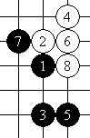
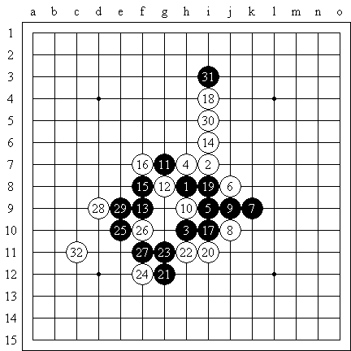
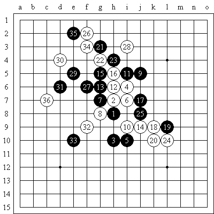
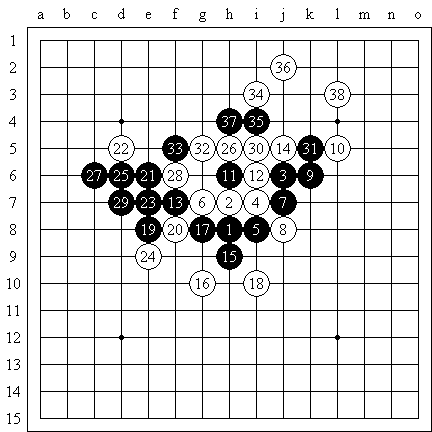
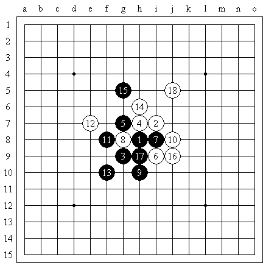
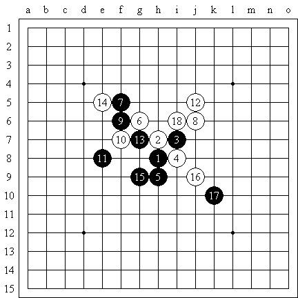

“骗招”理论初探
#1 “骗招”理论初探 作者：安娜制作所 发表时间：2011-3-21 12:47:58
“骗招”这个词在我刚学棋时就已经有了，我也不清楚是谁提出这个概念，或者如何定义的。随着水平的逐步提高，我逐渐发现，按照以前对骗招这一概念的理解，只要有足够长的时间（就一般的现实比赛来说，大概一个半小时，这在国内是不太可能的，因为还需要布局、残局、落子的时间），一个水平极高的棋手面前大部分骗招都是无效的，因为这么长时间的话棋手基本可以把自己能算的局面算个遍，当发现确实难以取胜时，聪明的做法是及时寻找变通。但既然这个概念总是存在的，那么究竟什么是骗招呢？什么样的骗招是高手也容易被“骗”到的？在传统的理解中，骗招有如下两个内涵：
（1）必败的招法；
（2）容易走出错误应对/难以走出正确应对的招法；
依此，我希望能对骗招下一个定义，遗憾的是我意识到这具有极大的困难。第一点很难单独成为骗招的定义，比如很少说下一个必胜开局那么每一步都是骗招，直到对手走出错误应对；面对必败的局面，往角落扔一个子自然也不是骗招；一个复杂的必胜定式也不一定被称为骗招。因此，关于第一点，骗招是否一定必败是很难准确说明的，唯一可以确定的是，不管是否必败，这手骗招一定要是棋手有意识地构造出来的，不能是在防守的过程中迫于无奈或是随意形成的（虽然很多骗招确实出现在防守的过程中）。
关于第二点，关注了这个“骗”字，但遗憾的是这是一个非客观的标准，因此不能用于对概念做出定义。我举一个简单的例子：
#2 Re:“骗招”理论初探 作者：安娜制作所 发表时间：2011-3-21 12:53:20
这个局面，黑棋如果防在下面则必败，防在上面则必胜。然而，对于初学者来说，“反击 + 争先 + 集中子力”防在下面或许是不错的选择，但有一定水平的棋手，或者从定式出发，或者从临场计算出发，都可以判断出防在上面会更好。这意味着“容易走出错误应对/难以走出正确应对的招法”取决于棋手的水平甚至棋风。即便如此，我依然认为这个“骗”字更加准确地概括了骗招的内涵。如上文中提到的，对于高手而言，其计算能力或许完全可以容纳全部正确应对，然而令其走入陷阱的则是因为在短时间、不精确的计算过程中做出了错误的判断，导致没有计算正确应对的机会，自然也就无从发挥自己的水平了。因此，所谓骗招，一定是诱导对手根据思维定势“自然而然”走出某一手棋的“诱导”。当然，同骗招本身一样，错误的一手棋也没有理由一定是必败的，比如诱导对手走出错误的进攻，消除必胜局面，都是可能的骗招使用方式。
依此，骗招分为比较典型的两大类：进攻型骗招和防守型骗招，前者经常在实战中忽然出现，也就是有时说到的“骗杀”形式多种多样，难以统一划分，只能在实战中认真计算；后者则常常成为比赛准备的对象，此类骗招，无非是令对方感觉到自己的优势，进而采取积极的进攻，提前设计好意想不到的防守或反击来避免失败。但不管是哪一类骗招，都是通过针对对手计算的盲点而成立的，一般的计算盲点有以下几类：（以下只是举例，不一定是实际可能出现的骗招）
（1）活三的特殊防守方式

30、32正确防守

32、34冲四破坏“四三”形状
（2）白棋VCF抓禁

29忽略白棋VCF
（3）好的进攻形中不易察觉的禁手

13位置错误，17后黑棋没有VCF
（4）比较隐蔽的反四

18构造反击
最后，作为结束语，我希望能给刚刚接触骗招这一概念的棋手做一些提示：
（1）不要认为在对局中使用骗招是不光彩的，广义而言，每一手进攻和防守，都在考验着棋手是否犯错误，考验着棋手是否屈从于随意的发挥而忽视认真的计算；
（2）不要不关注骗招，更不要太关注如何骗到别人，否则有可能会形成不良的技术体系；
（3）不要因为使用（过于尖锐以至于非生即死的）骗招赢了对手而过于沾沾自喜，同时也要认真、积极地反省自己因为骗招而输掉的对局。
（4）时刻记住，富有逻辑的分析和深入的计算永远是克制骗招的法宝.
{转自中华连珠}
［此帖子已被 安娜制作所 在 2011-3-21 12:54:27 编辑过］
［ 茗弈小刀 于 2011-3-21 14:13:47 时奖励此帖[金币加 100 威望加1］
#3 Re:“骗招”理论初探 作者：茗弈宽容 发表时间：2011-3-21 14:16:50
谢谢娜娜转这篇李老师的文章,看后受益匪浅,谢谢.#4 Re:“骗招”理论初探 作者：屏蔽 发表时间：2011-3-21 14:28:36
http://hi.baidu.com/%C6%C1%B1%CE/blog/item/bb9e7f59fe3821212834f0b2.html
http://www.shwzq.com/learn/research/2010/0312/666.html